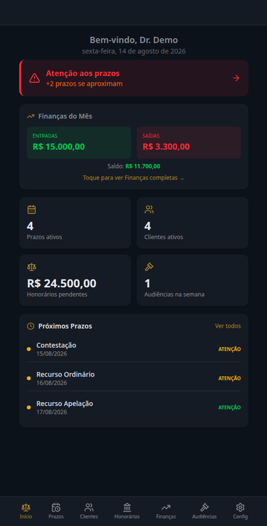
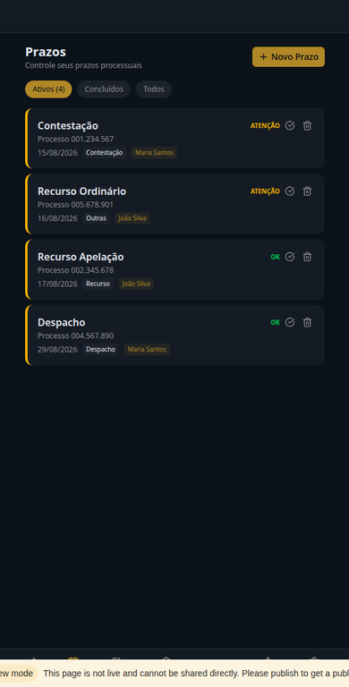
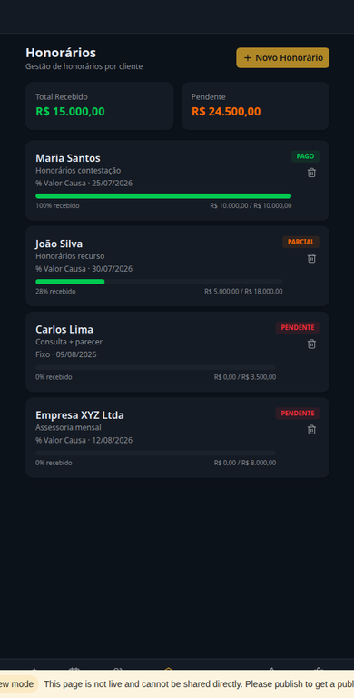
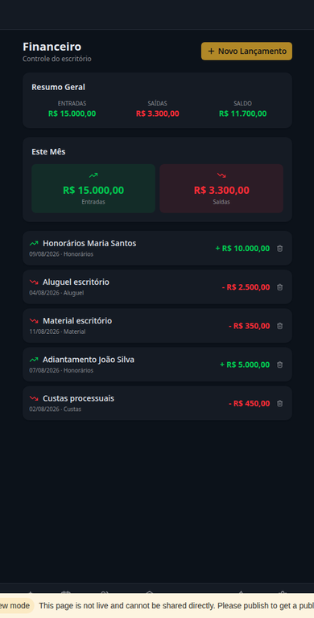

Prazos e tarefas
Registre datas, responsáveis, prioridades e status para enxergar os próximos passos.
O JurisGestor reúne prazos, clientes, processos, audiências, honorários e financeiro em um único app — feito para acompanhar a rotina real de quem advoga.

Planilhas, anotações, mensagens e várias abas abertas consomem energia e aumentam o retrabalho. O JurisGestor transforma essa bagunça em uma visão simples do que precisa ser feito.
Visualize o que está próximo e o que já foi concluído.
Acompanhe honorários contratados, pagos e pendentes.
Tenha clientes e processos relacionados no mesmo lugar.
Continue trabalhando offline, com os dados no aparelho.
Recursos diretos para você gastar menos tempo procurando informação e mais tempo cuidando do seu trabalho.
Registre datas, responsáveis, prioridades e status para enxergar os próximos passos.
Centralize dados essenciais e relacione cada processo ao cliente certo.
Organize compromissos, locais e observações para chegar mais preparado.
Acompanhe valores contratados, recebidos e pendentes por cliente.
Registre entradas e despesas para entender o movimento do escritório.
Seus dados ficam no dispositivo e podem ser exportados para backup.
Uma experiência visual, objetiva e confortável para usar no celular ou no computador.

Prazos por urgência

Honorários por cliente

Entradas e despesas
Visão geral
Escolha a oferta de lançamento e finalize pelo Mercado Livre ou fale diretamente pelo WhatsApp.
Você recebe a chave e o link de acesso no e-mail informado após a compra.
Cadastre clientes, processos e prazos. Use no celular, tablet ou computador, inclusive offline.
Uma compra única para ter acesso ao JurisGestor sem mensalidade.
A estrutura que faltava para deixar a gestão do escritório mais organizada.
Sim. A versão atual foi pensada para funcionar offline, com os dados mantidos no seu dispositivo. É possível exportar os dados para backup.
Sim. O JurisGestor é multiplataforma e pode ser instalado na tela inicial do celular como um app.
Não. A oferta apresentada é de acesso vitalício, com pagamento único.
Após a confirmação, envie seu e-mail pelo chat do Mercado Livre ou WhatsApp. A chave de ativação e o link de acesso são enviados em até 4 horas.
O JurisGestor atende especialmente advogados autônomos e pequenos escritórios que querem centralizar a operação com simplicidade.
Comece com uma ferramenta simples, completa e feita para a realidade da advocacia.
Conhecer a oferta de lançamento →